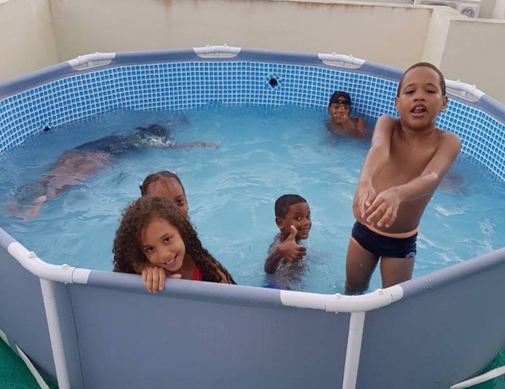
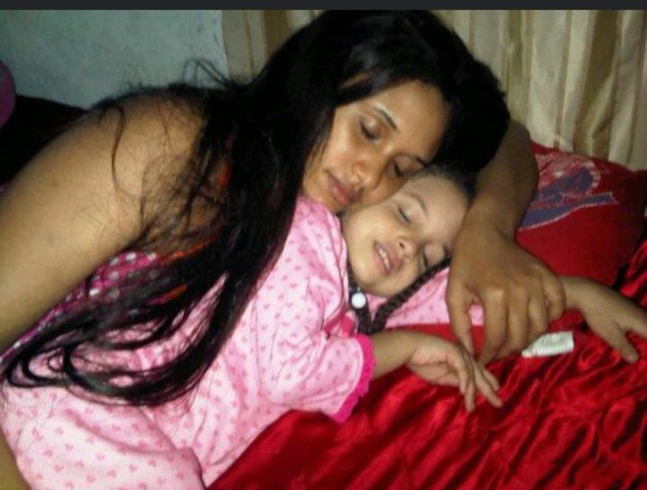
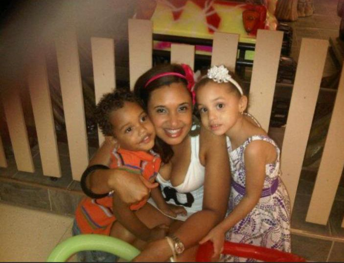
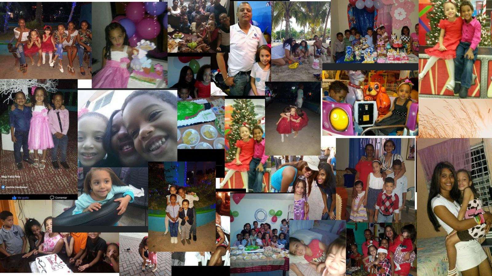
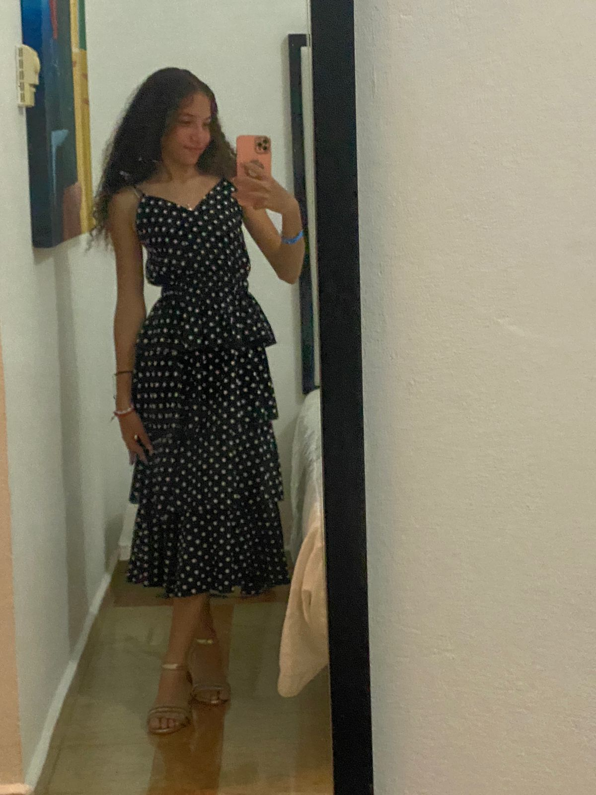

Un poquito de mi infancia
Naci un 14 de abril del 2009 en santo domigo, soy hija de Osiris Gautreaux y Blanca iris Feliz
Un poquito de mi infancia
Mi infancia fue una etapa realmente maravillosa, llena de momentos felices y recuerdos que siempre guardaré en mi corazón. Una de las cosas que más disfrutaba era ir al campo, donde pasaba horas jugando con mis primos, corriendo y explorando la naturaleza. Mis abuelos eran una gran parte de esos días, su amor y cariño siempre me hacían sentir especial, y sus historias y consejos me alegraban. También solía ir de vacaciones a casa de mi tía, donde el ambiente siempre estaba lleno de risas y juegos. No tenía preocupaciones, solo la alegría de vivir cada momento al máximo, rodeado de las personas que más quería. Esa sensación de libertad, de estar en un lugar lleno de amor y tranquilidad, me hacía sentir completamente feliz y en paz.



Titulo
Como creci tan rapido

Algunos momentos de mi infancia
Actualmente
Hoy en dia tengo 15 años, vivo en el Kennedy con mi madre y hermanos, estoy agradecida por la vida que tengo.

Estudio en el politecnico Marillac, uno de los mejores politecnico.